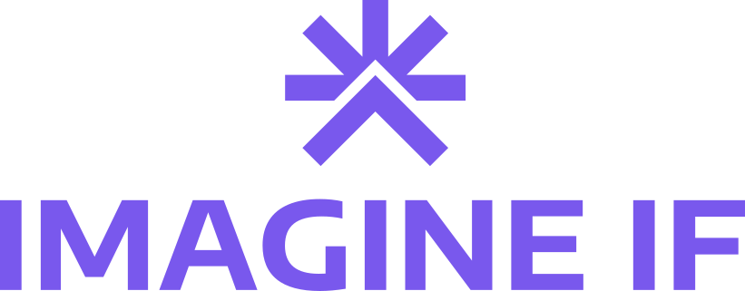
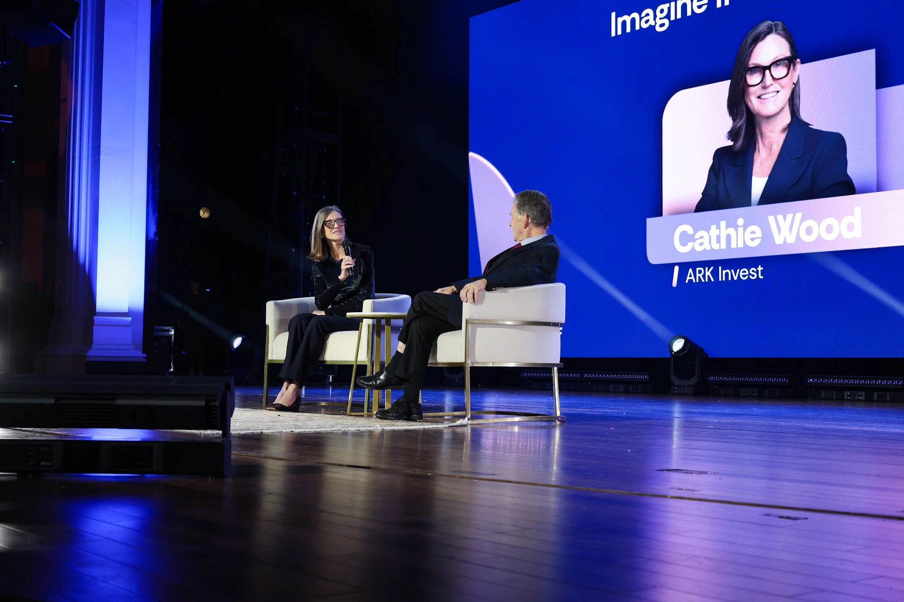

Imagine IF / Brand resources
Big ideas travel further together. Here’s everything you need to tell the Imagine IF story.
Download the media kitLogos in SVG + PNG · Brand sheet · Boilerplate

01 / The signature
Our sun, mountain, and upward arrow reflect exploration, perspective, and progress. Use the original artwork with room to breathe.


02 / The palette
Warmth meets possibility. Click a swatch to copy its hex value.
03 / The voice, visually
Clear and human at the core, with moments of imaginative flair.
Encode Sans Expanded Bold is the wordmark typeface. For the logo itself, use the supplied artwork.
View typeface ↗04 / The story
A little context for your next article, announcement, or introduction. Copy and share.
Imagine IF brings dreamers, builders, and believers together to imagine bold, positive futures and turn possibility into action.
Imagine IF is a gathering rooted in creative optimism, human flourishing, and the freedom to build a better world. Through thought-provoking talks and conversations, it brings people together to explore how innovation and technology can expand human possibility. Each “Imagine IF…” talk plants a seed for what becomes possible when bold imagination meets human action.
Capital I. Capital IF. A space between them. In running text, write “Imagine IF.” When expressing the invitation at the heart of the brand, “Imagine IF…” opens the door to possibility.
05 / Keep the conversation going
For press inquiries, interviews, and additional resources, get in touch.
community@bitcoinpark.com